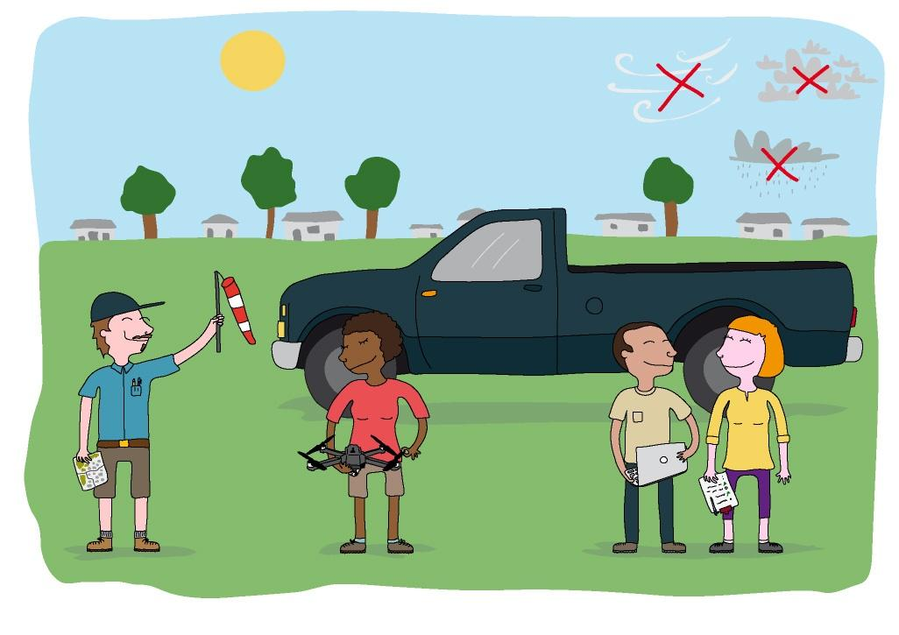
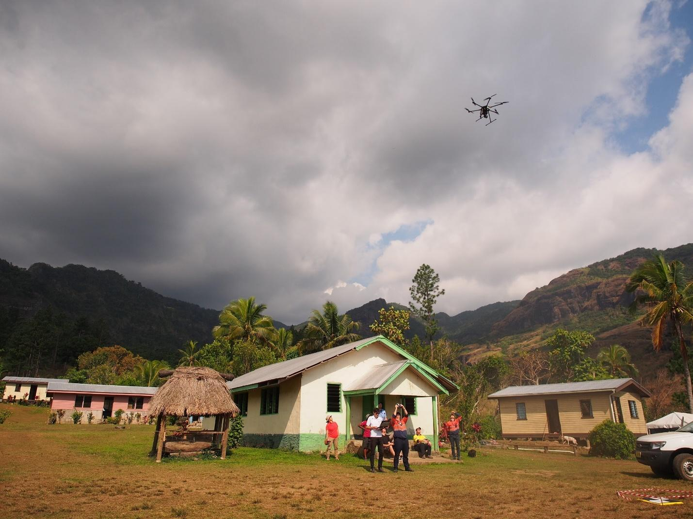

8. Managing Work Flow in the Field
UAVs are often small enough to be carried in backpacks, but usually a motor vehicle such as a small pickup truck is used to carry the associated equipment, including the survey equipment (base station) if GCPs are being used. A vehicle also provides shelter in case of inclement weather, and the vehicle battery or cigarette lighter plug can be used to recharge UAV batteries and laptops in the field during long survey missions.
Teams in the field should include at least two people: a pilot who monitors the UAV’s flight on the computer screen, and a pilot who maintains sight of the UAV and surrounding airspace at all times while flying within line of sight.
At the takeoff location, the team’s designated safety officer ensures that all precautions are taken before, during, and after flights.1 At this point, it is assumed that all legal prerequisites to fly a UAV have been obtained, including special permissions and communications instructions, especially those applicable during an active disaster response scenario. To identify cases where New Zealand–based UAV regulations require special permissions, please refer to the Airshare website (Airshare n.d.).
A generic pre-flight safety checklist can include the following steps:
- Verify proper distance from residential areas, people, overhead power lines, trees, etc.
- Inspect takeoff site; identify alternative options for landing
- Communicate with air traffic control and provide updated flight plans
- Check weather conditions, particularly wind speed and direction
- Inspect UAV, batteries, and radios for any anomaly
- Ensure that batteries are fully charged
- Test telemetry link and (if available) failsafe sensors/mechanisms
- Acquire GPS lock and verify home location recording
- Ensure safe distance between aircraft and any bystander
- Verify flight plan perimeters.
Most commercial UAV platforms come with a safety pre-flight and post-flight checklist that should be followed. At every step from launch to landing, the designated safety officer should coordinate actions and communications (with loud voice signals). While in flight, the aircraft should be kept within visible range unless special permission has been obtained and tracking equipment is available for flying beyond the visual line of sight. After each flight the aircraft should be inspected for any anomaly.
Light and weather conditions are important. To minimize shadows in the image, it is best to fly during the day when the sun angle is high. The color depth and tone of imagery is also best when collected in full sun. Clouds, even light haze, obscure the signal in the scene and make use of the imagery challenging, if not impossible. High or even moderate winds may likewise pose difficulties, as many light UAVs do not operate well in such conditions. The day and time chosen to collect the imagery is therefore critical. Data collection should ideally be done between 10 a.m. and 2 p.m. to minimize shadows and on a clear day to minimize haze and cloud effects; it should also take into account the limitations of the platform with respect to wind and operating range (Figure 11).

Figure 11. Checking conditions and following safety measures in the field.
Source: PacDID. 2017
It is always important to modify settings to suit local lighting conditions prior to each flight. Preferred sensor settings are listed below** **(in order of preference where more than one setting appears).
- Focal length: fixed
- Operating mode: manual, shutter priority (shutter 1/1000–1/1500)
- Format: RAW, TIFF, low-compression JPEG
- Focus: infinite
- Flash: off
- Auto-rotate: off
- Optical/digital stabilization: off
- Metering mode: full-frame metering rather than “spot” metering (to reduce exposure issues)
The most important step before starting a UAV mission is to upload the flight plan to the aircraft onboard computer. This can be done in different ways, but usually from a laptop or mobile device that provides a screen visualization of flight patterns over preexisting imagery or maps. This visual check allows for verification of the home (takeoff) setting and its relative position to the flight extent.
Once the flight plan has been uploaded into the aircraft computer and final checks have been performed (and all necessary approvals have been obtained and communicated), the UAV is cleared for takeoff.
It is important to note that all mapping UAVs must be flown in autonomous mode following a predefined flight plan in order to obtain images suitable for creating a mosaic. In general, manual flights where pilots maneuver the aircraft remotely cannot ensure that the correct pattern is being followed and enough overlap is maintained between frames and flight lines.
After takeoff, the aircraft should be checked for any anomaly (through visual and telemetry feedback) before starting the autonomous mission. The pilot should always be ready to take over in manual control mode if needed.
Once the UAV has landed, images and GPS logs are transferred to a local device either through the radio link or by physically removing the storage medium (typically an SD card) from the aircraft for copying files to a laptop. When multiple flights are planned, data are transferred at the end of the mission and only the battery is swapped between flights. It is still important to sample image quality by transferring a few full resolution files from the camera to a device used for inspection. In case of any issue, the camera settings should be checked and adjusted.

Figure 12. Launch of a multirotor UAV, which requires less open space than for a fixed wing.
Credit: UAV4Resilience 2017
-
The safety officer may be a third person, or one of the two pilots who takes on this additional role. The safety officer is responsible for ensuring all pre-flight checks are followed and that conditions to fly are appropriate (i.e., wind and cloud ceiling at minimum thresholds, clear skies). Depending on the procedures that have been agreed, the safety officer may also be responsible for communications with ATC for airspace deconfliction. ↩︎